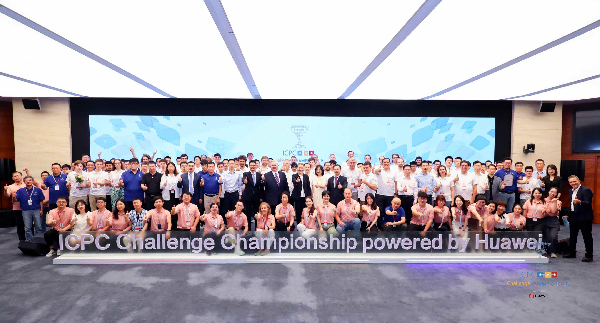

ICPC 2023
Today, we gather here together; tomorrow, we will go to the four corners of the world
—Minutes of Mr. Ren Zhengfei's Meetings with ICPC Foundation President, Coaches, and Champions
August 21 and 26, 2023
Thank you to the ICPC community for coming from around the world to tour Huawei and participate in the ICPC Challenge Championship powered by Huawei. We will continue to support your global events, and also all kinds of contests for university students in subjects like math, physics, and biology.
I. We are set to embark on the journey of the Fourth Industrial Revolution, during which a huge abundance of computing power will serve as the foundation. Young people today may become the leaders of the Fourth Industrial Revolution tomorrow. The reason we support contests is to build a stage for young people to shine.
Teamwork is not only the basis for winning contests, but also the basis for survival. More importantly, teamwork is necessary to drive greater prosperity for humanity. It is essential that we work closely together. When we come together, we will inspire and compete with each other. This will lead to the explosive development of new scientific technologies. Elites from 25 countries are happily gathered here today. After getting to know each other, we will exchange ideas on a common platform. Coaches, students, teams can inspire each other. This may leave behind great memories and ignite sparks. When these young people return home, they can light big fires of innovation to their own communities. New scientific technologies are sure to help create more wealth, eliminate poverty, and improve people's lives, enabling humanity to embark on a road towards affluence.
The Fourth Industrial Revolution is massive and its scale is far beyond our imagination. Young people today will become the leaders of the era of massive computing power. All of society places great hope upon you. You will surely shine like stars during the AI revolution over the next two to three decades.
II. Huawei has always followed the principle of identifying and developing talent, but never seeking monopoly in this regard. We will continue opening our arms to embrace global talent.
Global development is inseparable from technological progress and talent exchange. Faster development and better talent will be the basis for countries to prosper. Huawei is willing to work with academia to cultivate outstanding talent in the information domain. However, we will never seek monopoly in this regard. After studying and growing at Huawei, such talent will return to their own countries. This will be conducive to the rejuvenation of the information sectors of these countries.
III. We will support contests over the long term, and will sponsor the organizers of both global and regional contests. And we will not only continue supporting contests but also increase our sponsorship for such events.
We will support the ICPC Foundation hosting world finals in Asia East, and will more regularly invite outstanding contestants and coaches to visit China, for example, Beijing, Shenzhen, Hangzhou, Shanghai, Guizhou, and border provinces like Xinjiang and Tibet. China has many very beautiful counties that are worth visiting. In these places, the contestants and coaches can see China's industry development and urban construction firsthand. They can take high-speed trains to experience the speed of development in China. They can also have coffee, try barbecue or Chinese cuisine, and experience the country's cultural climate.
Aside from supporting or co-organizing global software contests, we are supporting contests in other subjects, like informatics, math, physics, chemistry, biology, and neural networks. We will also support young people majoring in such subjects, inspire them to become interests in scientific research, and thus help cultivate talent in basic science.
IV. We will open up our campuses worldwide and support ICPC contests on our campuses. We will also provide access to our facilities where students can experience what it is like to work at Huawei.
Huawei provides the world's bright young minds with both IT technical challenges and internship and research opportunities. We offer these individuals access to Huawei's device-edge-network-cloud platform, and the chance to explore the fundamentals and frontiers that are key to addressing top challenges. By organizing contests and inspiring open discussions on our Chaspark website, we create multiple channels through which young people can understand real-world challenges in industry. If they win prize money from our contests, they can spend more time studying, rather than working part-time to earn their tuition fees. This is a good way for young people to grow faster.
Q&A Session
Representative of Singapore's National Olympiad Committee, former ICPC team coach: First, I would like to thank Huawei for its generous support in helping train our students and organize contests. I'd like to discuss two contest organizations. The first is the IOI, which is a pipeline to the ICPC. The IOI mainly focuses on discovering and training talent. But the IOI is currently facing some problems. There are over 90 countries involved in the IOI, but many aren't, such as Cambodia, Laos, Brunei, and Myanmar. Therefore, all these countries need our support. I think this aligns with Huawei's vision - spreading information technologies to every corner of the world. Even those who are currently part of the IOI are facing problems. They don't have the resources necessary to train students. So even though they take part in the IOI, there is very little possibility of them winning a medal. Therefore, they won't be able to participate in the ICPC. So I really hope that Huawei can actually give us some support. Second, I want to talk about the EGOI, which stands for the European Girls' Olympiad in Informatics. I think this is a great trend. Among our 58 participants, there is only one girl, which is less than 2%. I hope that Huawei can help address gender imbalance within such contests.
Mr. Ren: When Singapore was founded, Lee Kuan Yew enacted two important national policies. The first was to choose English as one of Singapore's national languages, which has helped connect the country to a wider world. The second was to make Chinese, or Mandarin, another official language. These policies help the country connect to two major parts of the wider world. Today, our computer contest aims to unify both the language of computers and the standards in the era of massive computing power. We aim to remove the obstacles and misunderstandings between us through exchanges over cups of coffee.
This time, we've connected the 25 participating countries. A spark can shine brightly, and even lead to big fires of innovation for a country. The coaches and young people here are welcome to China at any time. You already have the contact information of many of our colleagues, so you can stay in touch with them. The young people present here are our long-term partners. In addition to the ICPC, we will support the IOI and contests in subjects like math, physics, chemistry, biology, and neural networks. Together, we can help cultivate talent in basic science.
ICPC team coach from Northern Eurasia: I have been working as an ICPC champion team coach for ten years. Many companies are supportive of talent development efforts, but they rarely seem willing to support large contests like the ICPC, as such contests may not be directly related to their own business. Things changed a lot when Huawei opened local resource centers and started supporting contests. In my opinion, Huawei's goal is to recruit talent and, more importantly, help local communities cultivate their own talent. We have received considerable support from the contest management department, and 25 students from my champion teams have joined Huawei. Why are contests so important to Huawei's business development? Why does Huawei believe that contests are essential?
Mr. Ren: Huawei is a business organization, but we do not seek only profits. We are committed to sponsoring contests, and we do not do this to acquire talent. Going forward, we will ramp up our support for contests. A moment ago, when I was having coffee with ICPC leadership, and expressed my hope that more contests could be organized, including those related to subjects like informatics, math, physics, chemistry, biology, and neural networks. We will support these contests no matter whether or not they are related to Huawei's business. We have also discussed and agreed that scientific technologies should be used to help create more wealth and eliminate poverty, enabling humanity to embark on a road towards affluence.
Director of ICPC Latin America Contests: I'm very proud because a contestant from Latin America won the championship. Like him, there are many other outstanding students from our region. But I found that it is rare to see employees from Latin America at Huawei. My question is: Does Huawei welcome Latin American talent to come for internships? For example, does China offer any systematic support?
Mr. Ren: At Huawei, we welcome outstanding talent from all countries, including those in Latin America. We have an online platform called "Chaspark", where students can contact and communicate with our experts. They may be offered internships at Huawei if the experts think face-to-face communication is necessary. Let's take a simple example. Who invented 5G, which the US has devoted so much time and effort to restrict? Who invented Polar Code? Professor Erdal Arikan, from Türkiye. He published a mathematical paper more than a decade ago. We discovered this paper two weeks after its release. Then we arranged for thousands of scientists and experts to study and analyze this paper, and conduct related engineering work. That's how we developed world-leading 5G. There are always talented people we can work with. Of course, most of them are likely to be found in the US. Nobody can know where geniuses will emerge. You are welcome to communicate with our experts on our online platform Chaspark.
Professor at Peking University and ICPC Asia East Continent Co-Director: A few years ago, Huawei began sponsoring contests. We are very proud to see that support of global education events. What are your expectations for higher education?
Mr. Ren: We will continue to sponsor these global contests. I don't think that our current sponsorship is enough. We will double down on our efforts in this area.
Higher education should be well-tailored. We should not always stress the use of unified teaching materials. I don't agree with the slogan "do not let children lose at the starting line" used for elementary and secondary education. We should not make excellent students wait for those who are left behind. Education in China must be revitalized.
A contestant from Europe: There is a kind of scientific research called useless research. It is deemed useless in the short term because we do not know where it can be applied, though it is very important in the long term. This kind of research may be primarily conducted by universities rather than companies. What is Huawei's view on this so-called useless research? Will you fund this type of research?
Mr. Ren: What is science? Science is all about the unknown. In his book Science, The Endless Frontier, American scientist Vannevar Bush suggested that the US should study things that are seemingly useless and remote, that is, the so-called "useless" science. In the 1990s, Princeton University Professor Donald Stokes wrote a book Pasteur's Quadrant: Basic Science and Technological Innovation, which talks about how to use applications to guide scientific research and bring the so-called "useless" science together and translate it into useful applications.
Nowadays, the boundaries between science and technology are blurring, and the time it takes for science to translate into technology is being reduced. If we only begin to develop technology after universities have finished research on relevant theories, we will lose our first-mover advantage and competitive edge. That's why we value basic theoretical research. Every year, we invest about 3 to 5 billion US dollars in this area. We work hand in hand with universities to explore seemingly useless science.
A contestant from Asia West: Do ICPC contestants have the opportunity to join Huawei? If yes, what career opportunities does Huawei offer?
Mr. Ren: These contests are purely academic activities and are not directly related to opportunities to join Huawei. If you want to join Huawei, you can submit a job application to Huawei's human resource department in your country. Outstanding talent from around the world are welcome to join us. Bangladesh's population is set to reach 200 million in the near future, and the West sees the country as one of the next emerging industrial nations. With outstanding talent like you, I believe Bangladesh will embark on a journey of accelerated development. But what is the foundation for this kind of development? Speed. I hope you are among the first to take what you have learned back to Bangladesh and help your country develop at a higher speed.
Director of ICPC Mexico & Central America Contests: A number of tech companies, such as Oracle and Cisco, have set up R&D centers in Mexico. Does Huawei have any plans to set up an R&D facility in Mexico or Latin America in the future?
Mr. Ren: I think the President of our 2012 Laboratories has more information on the distribution of our R&D facilities outside China. We'll forward your question to him. Mexico has a magnificent history. Today, we still have a lot to learn about the ancient Maya civilization. Civilization in Mexico dates back millennia, and its influence can be found in many countries around the world. I think we may consider establishing an R&D facility in Mexico, but that also depends on the specific plans of our 2012 Laboratories. In the past, we built our R&D centers around the world, with the US at the center. After the US began imposing restrictions on Huawei, we gradually shifted our focus to Europe and Asia, and reduced our presence in Latin America. The US has a lot of influence in Latin America, so we need to further assess the situation in the region.
A contestant from Eurasia: Huawei has a large workforce. How do you manage employees to ensure efficient operations?
Mr. Ren: I paid a visit to the US right after Huawei was founded, in order to learn the US's corporate management systems. The main model we looked at was that of IBM. First, we learned IBM's goal management. The company placed customers at the center of everything it did. With this approach, it set a common goal of serving customers, which united its employees. Second, we learned the Integrated Product Development Process, or IPD, from IBM. This process is about getting market and service representatives involved in R&D. With IPD, we have a forward-looking organization that advances our R&D efforts. After that, we learned the Integrated Financial Services (IFS) and Integrated Supply Chain (ISC) processes from IBM. In this way, we built a clear process system. Another important issue is value distribution. For this issue, we tried to find where Huawei's wealth lies and how we should distribute it. We believe that our company's wealth lies in the brains of our employees, and we thus distribute value to employees based on the "weight" of the knowledge held in their brains. In our distribution system, the ratio of return on labor to return on capital is 3 to 1.
A contestant from Europe: I heard that you are a big fan of Apple. Is this true?
Mr. Ren: When my daughter studied in the US, she used Apple products. If she hadn't, she would have had a much harder time at school. I think we should be open-minded. We often look at what makes Apple products so good and try to understand the gaps between us and Apple. It's a good thing that we have someone to look up to. We can learn from them and compare our products with theirs. In this sense, you could say that I'm a fan of Apple.
For more information regarding ICPC Challenge Championship powered by Huawei, please visit: https://www.huawei.com/en/news/2023/8/icpc-talent-championship
For more information regarding ICPC Training Camp powered by Huawei, please visit: https://www.huawei.com/minisite/icpc2023/en/